Final project : Sound Reactive RGB strip
Materials Needed :
- Arduino Uno board x1 ( The embedded microcontroller)
- Full sized bread-board x1
- Sound sensor module x1
- Stepper motor x1
- RGB LED strip (appropriate length)
- Male to female and male to male jumper cables
- 5mm Acrylic boards( Laser cut )
- Transistor x3
-
- 1k ohm Resistor x3
-
My inspiration
I have always been a huge fan of making and listening to music, it is one of the things that I cannot live without. So when presented an opportunity to create our own project with everything that we have learned, I instantly wanted to do something related to music. As I was searching up for ideas online, I saw this thing called a Spectrum Analyzer. It visualises music based on the pitch and volume and displays it on a LED matrix. But as I researched more into the project, I found it to be slightly unmanagable due to varies reasons. Hence, I decided to substitude the LED matrix with a RGB LED strip and for it to react to music.
SKetch and rough idea
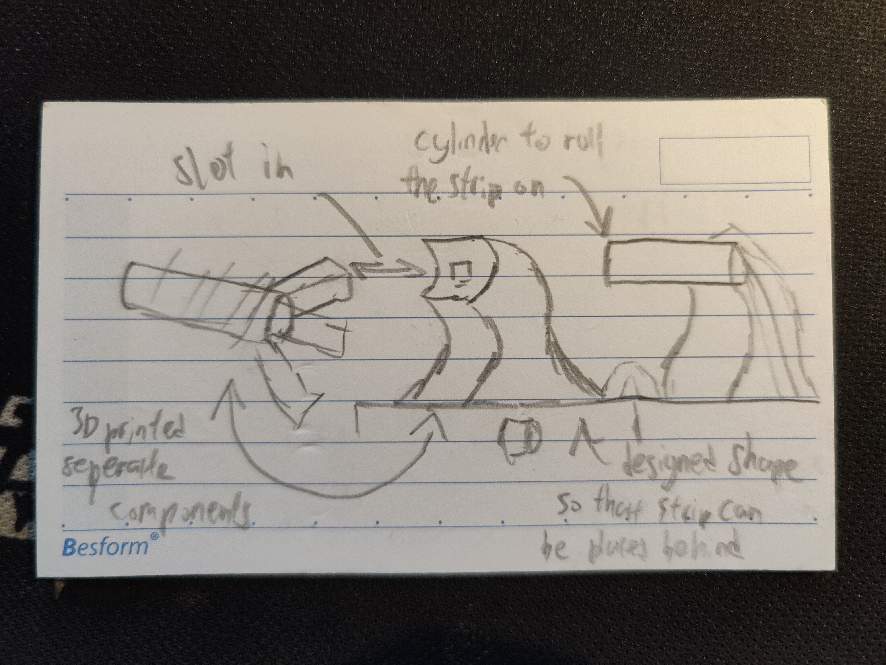
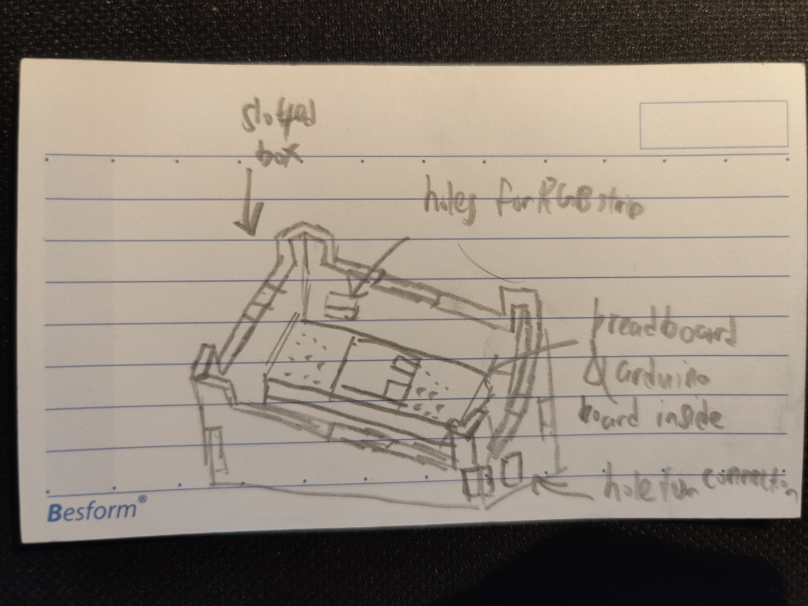
`
From here, I tried to use CAD to create my design
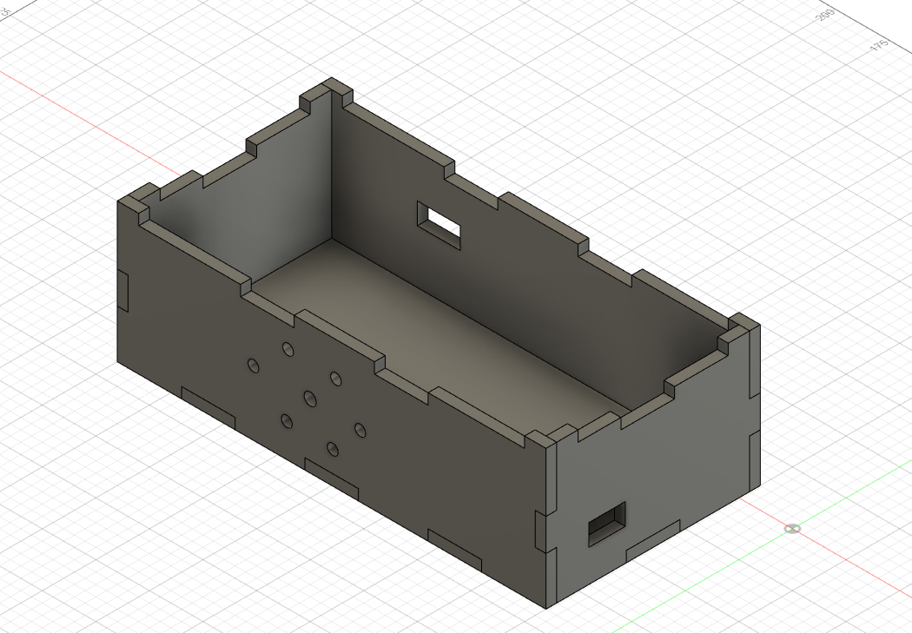 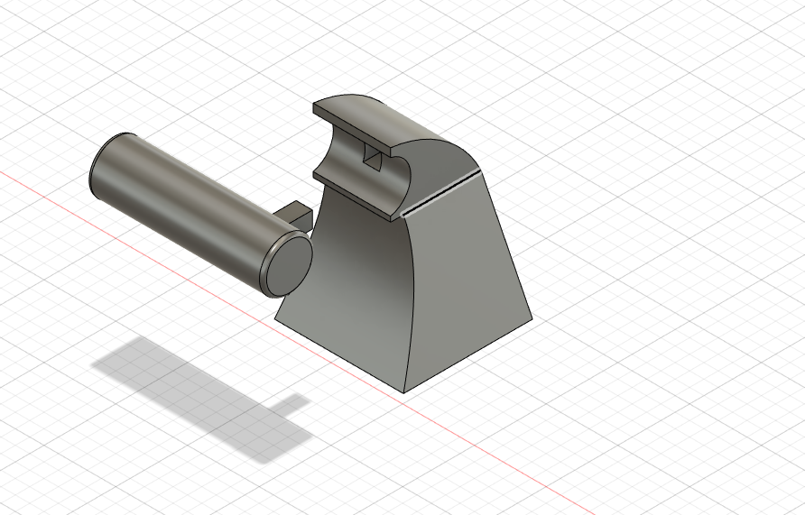
I added some holes at the front since I decided that my electric circuit will be kept inside the box, so the holes are there for the sound sensor to still pick up on the different sounds.
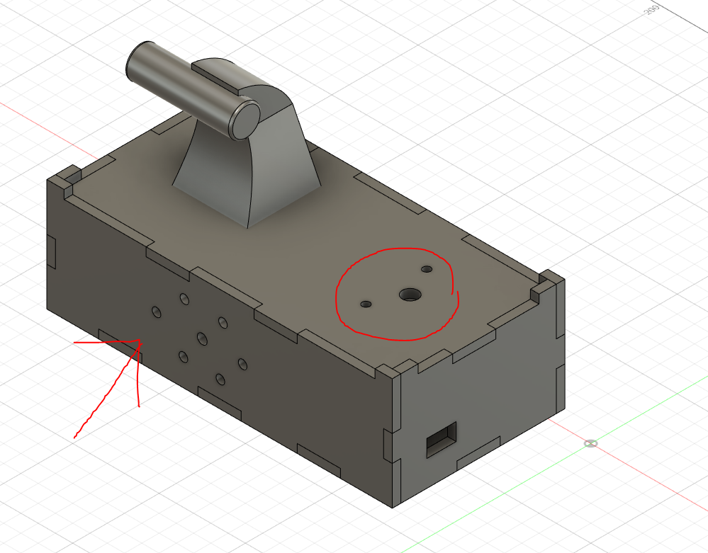
Here I added some hole for stepper motor on the top panel as I decided to include a stepper motor which spins an object, I believe it will make the project more asthetically pleasing, while also helping to fill up space on the box.
From here, I pretty much finalized my design and started on laser cutting and 3D printing.
Laser cutted Acrylic Box of thickness 5mm
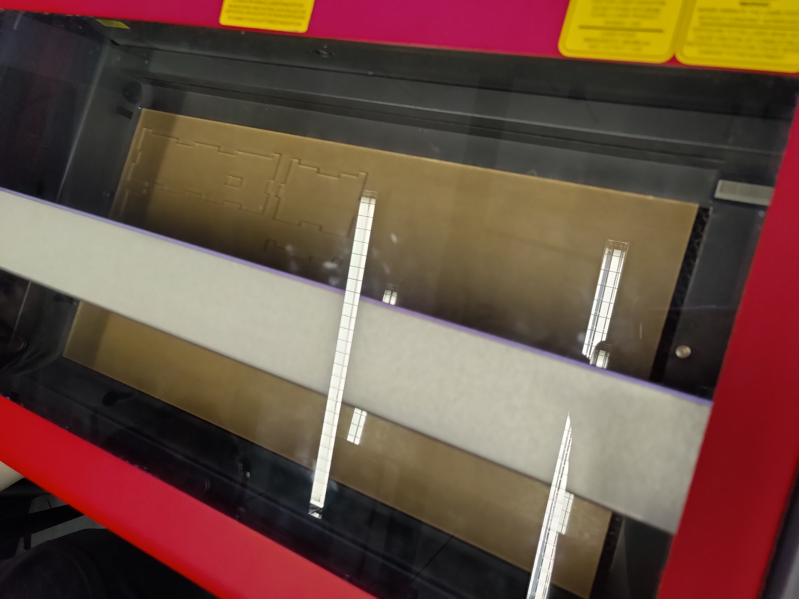 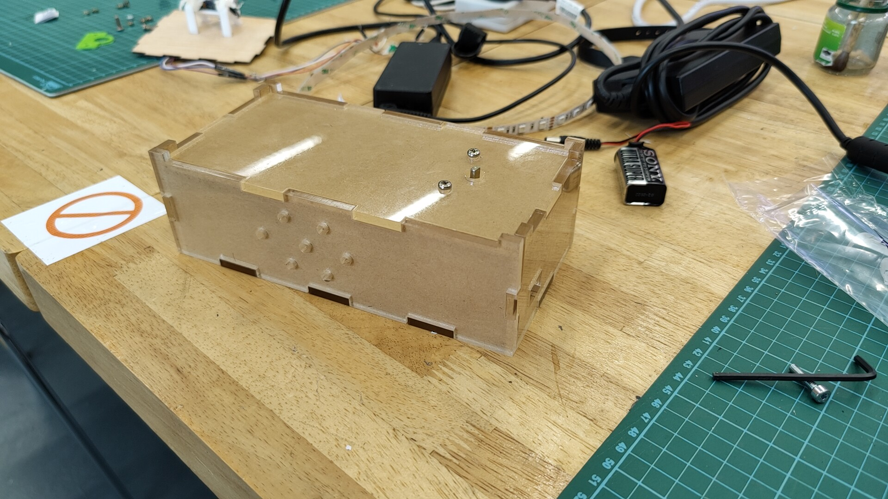
3D printed components
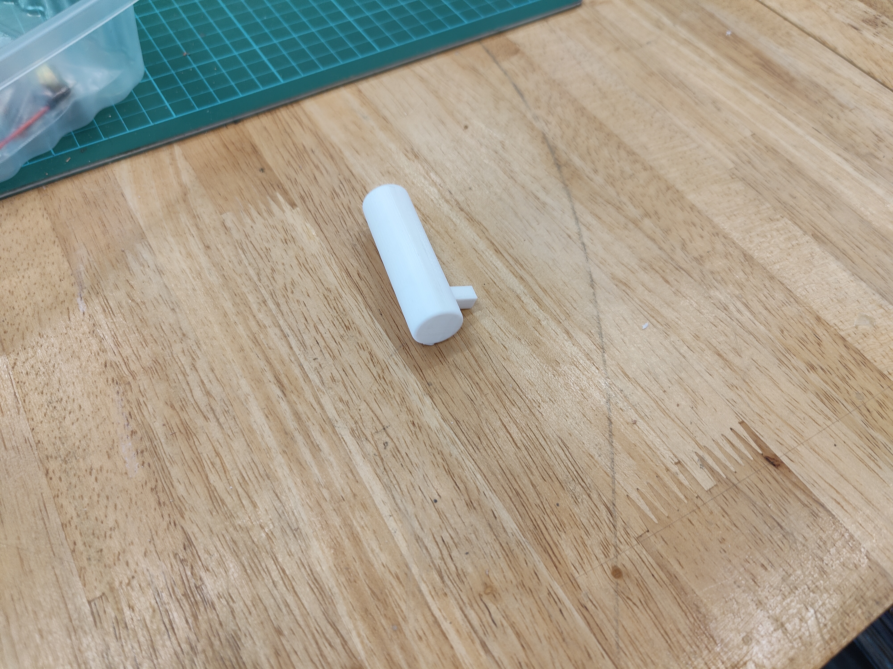 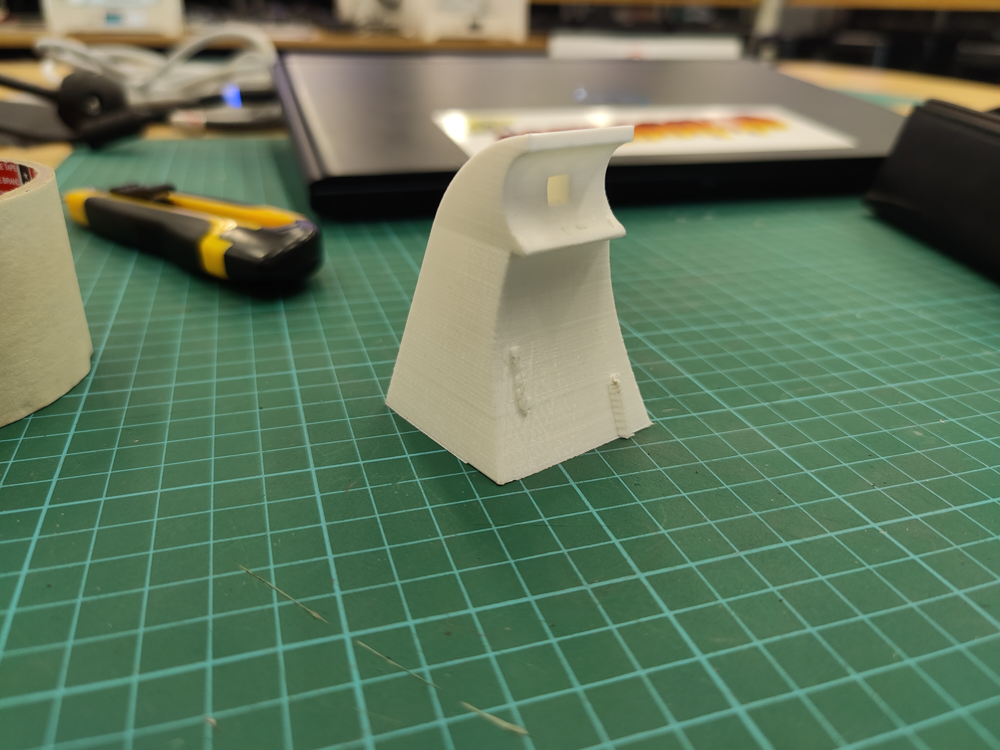 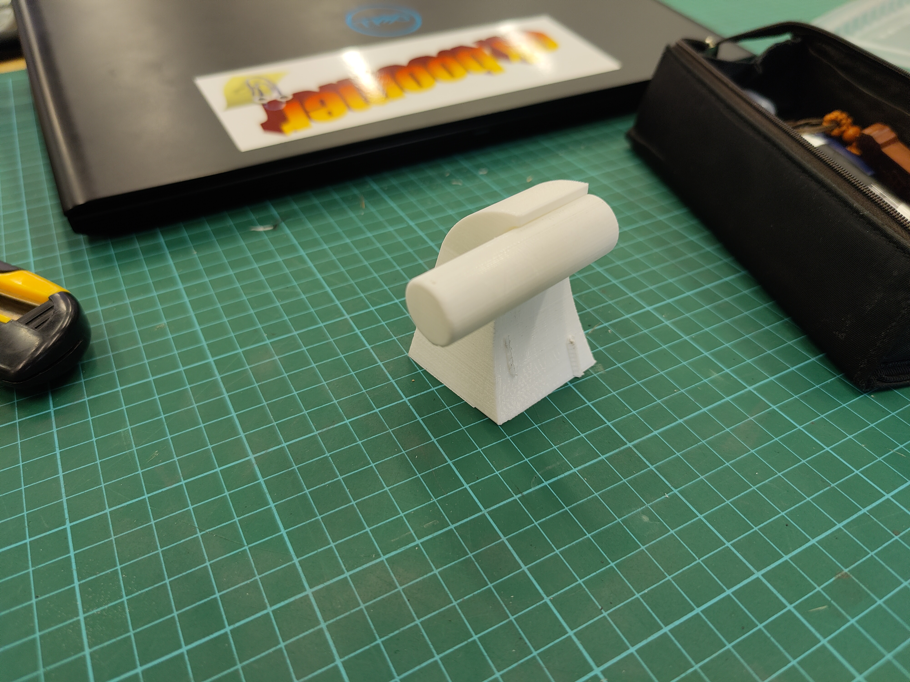
Final looks
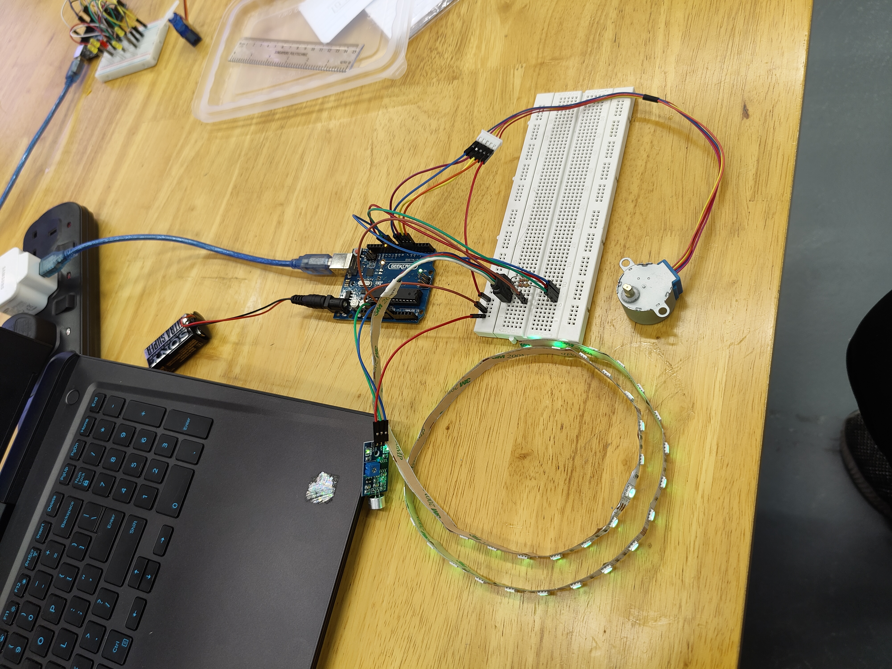 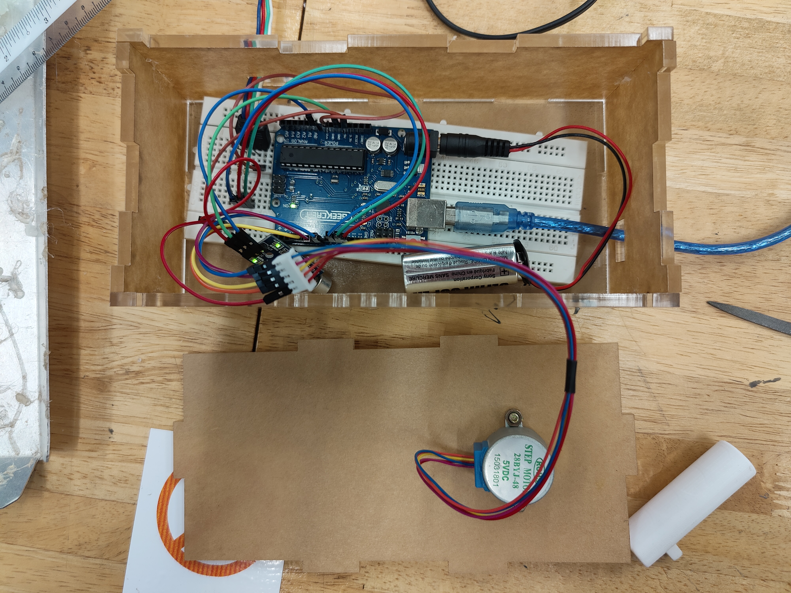
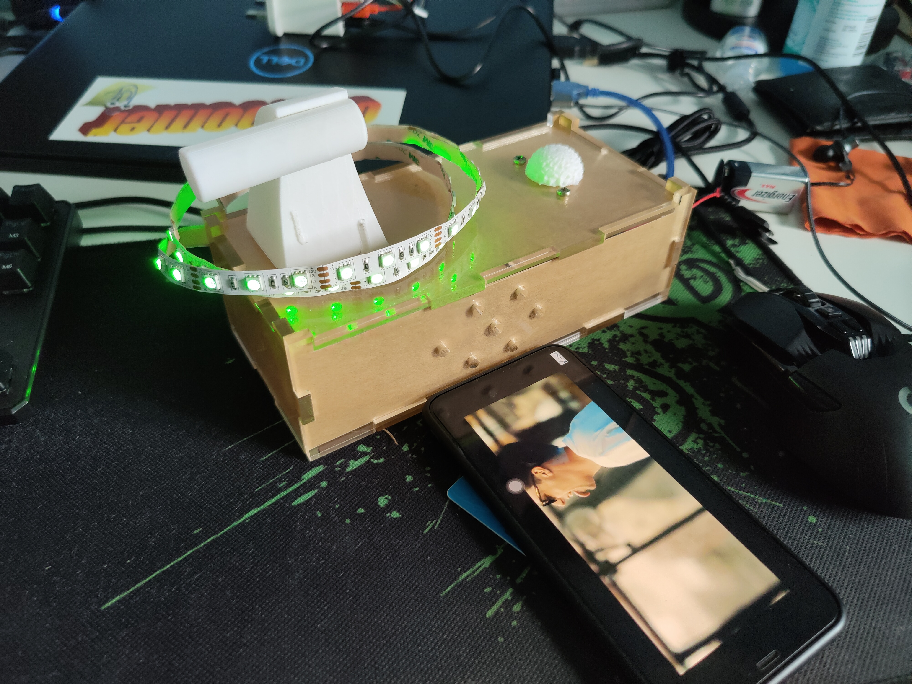